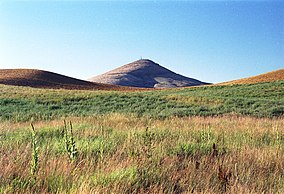

 Steptoe Butte is a quartzite island jutting out of the silty loess of the Palouse hills in Whitman County, Washington, in the northwest United States. The 3,612-foot (1,101 m) butte is preserved as Steptoe Butte State Park, a publicly owned 150-acre (61 ha) recreation area located 12 miles (19 km) north of Colfax. The rock that forms the butte is over 400 million years old, in contrast with the 15-7 million year old Columbia River Basalts that underlie the rest of the Palouse. Steptoe Butte has become an archetype, as isolated protrusions of bedrock, such as summits of hills or mountains, in lava flows have come to be called "steptoes". Steptoe and Kamiak Buttes are outliers of Idaho's Coeur d'Alene Mountains.
The butte was named after Colonel Edward Steptoe. A hotel built by James S. "Cashup" Davis stood atop the butte from 1888 to 1908, burning down in 1911. In 1946, Virgil McCroskey donated 120 acres (49 ha) of land to form the park, which was later increased to over 150 acres (61 ha). The east,south and west portions of the butte were purchased in 2016 by two couples Kent and Elaine Bassett, and Ray and Joan Folwell. The owners planned to protect their 437 acres (177 ha) of land from development, eventually donating it to the state. This plan came to fruition when they sold the land to the Washington State Department of Natural Resources in December 2021.